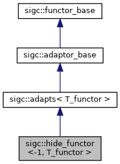

Adaptor that adds a dummy parameter to the wrapped functor. More...
#include <sigc++/adaptors/hide.h>
Inheritance diagram for sigc::hide_functor<-1, T_functor >:

Public Types | |
| typedef adapts< T_functor >::adaptor_type | adaptor_type |
| typedef adaptor_type::result_type | result_type |
 Public Types inherited from sigc::adapts< T_functor > Public Types inherited from sigc::adapts< T_functor > | |
| typedef adaptor_trait< T_functor >::adaptor_type | adaptor_type |
| typedef adaptor_trait< T_functor >::result_type | result_type |
Public Member Functions | |
| hide_functor (const T_functor & _A_func) | |
| Constructs a hide_functor object that adds a dummy parameter to the passed functor. More... | |
| template<class T_arg1 , class T_arg2 , class T_arg3 , class T_arg4 , class T_arg5 , class T_arg6 , class T_arg7 > | |
| deduce_result_type< T_arg1, T_arg2, T_arg3, T_arg4, T_arg5, T_arg6, T_arg7 >::type | operator() (T_arg1 _A_a1, T_arg2 _A_a2, T_arg3 _A_a3, T_arg4 _A_a4, T_arg5 _A_a5, T_arg6 _A_a6, T_arg7) |
| Invokes the wrapped functor, ignoring the last argument. More... | |
| template<class T_arg1 , class T_arg2 , class T_arg3 , class T_arg4 , class T_arg5 , class T_arg6 > | |
| deduce_result_type< T_arg1, T_arg2, T_arg3, T_arg4, T_arg5, T_arg6 >::type | operator() (T_arg1 _A_a1, T_arg2 _A_a2, T_arg3 _A_a3, T_arg4 _A_a4, T_arg5 _A_a5, T_arg6) |
| Invokes the wrapped functor, ignoring the last argument. More... | |
| template<class T_arg1 , class T_arg2 , class T_arg3 , class T_arg4 , class T_arg5 > | |
| deduce_result_type< T_arg1, T_arg2, T_arg3, T_arg4, T_arg5 >::type | operator() (T_arg1 _A_a1, T_arg2 _A_a2, T_arg3 _A_a3, T_arg4 _A_a4, T_arg5) |
| Invokes the wrapped functor, ignoring the last argument. More... | |
| template<class T_arg1 , class T_arg2 , class T_arg3 , class T_arg4 > | |
| deduce_result_type< T_arg1, T_arg2, T_arg3, T_arg4 >::type | operator() (T_arg1 _A_a1, T_arg2 _A_a2, T_arg3 _A_a3, T_arg4) |
| Invokes the wrapped functor, ignoring the last argument. More... | |
| template<class T_arg1 , class T_arg2 , class T_arg3 > | |
| deduce_result_type< T_arg1, T_arg2, T_arg3 >::type | operator() (T_arg1 _A_a1, T_arg2 _A_a2, T_arg3) |
| Invokes the wrapped functor, ignoring the last argument. More... | |
| template<class T_arg1 , class T_arg2 > | |
| deduce_result_type< T_arg1, T_arg2 >::type | operator() (T_arg1 _A_a1, T_arg2) |
| Invokes the wrapped functor, ignoring the last argument. More... | |
| template<class T_arg1 > | |
| deduce_result_type< T_arg1 >::type | operator() (T_arg1) |
| Invokes the wrapped functor ignoring the only argument. More... | |
| Public Member Functions inherited from sigc::adapts< T_functor > | |
| adapts (const T_functor & _A_functor) | |
| Constructs an adaptor that wraps the passed functor. More... | |
Additional Inherited Members | |
| Public Attributes inherited from sigc::adapts< T_functor > | |
| adaptor_type | functor_ |
| Adaptor that is invoked from operator()(). More... | |
Detailed Description
template<class T_functor>
struct sigc::hide_functor<-1, T_functor >
struct sigc::hide_functor<-1, T_functor >
Adaptor that adds a dummy parameter to the wrapped functor.
This template specialization ignores the value of the last parameter in operator()().
Member Typedef Documentation
◆ adaptor_type
template <class T_functor >
| typedef adapts<T_functor>::adaptor_type sigc::hide_functor<-1, T_functor >::adaptor_type |
◆ result_type
template <class T_functor >
| typedef adaptor_type::result_type sigc::hide_functor<-1, T_functor >::result_type |
Constructor & Destructor Documentation
◆ hide_functor()
template <class T_functor >
|
inlineexplicit |
Constructs a hide_functor object that adds a dummy parameter to the passed functor.
- Parameters
-
_A_func Functor to invoke from operator()().
Member Function Documentation
◆ operator()() [1/7]
template <class T_functor >
template <class T_arg1 , class T_arg2 , class T_arg3 , class T_arg4 , class T_arg5 , class T_arg6 , class T_arg7 >
|
inline |
Invokes the wrapped functor, ignoring the last argument.
- Parameters
-
_A_a1 Argument to be passed on to the functor. _A_a2 Argument to be passed on to the functor. _A_a3 Argument to be passed on to the functor. _A_a4 Argument to be passed on to the functor. _A_a5 Argument to be passed on to the functor. _A_a6 Argument to be passed on to the functor. _A_a7 Argument to be ignored.
- Returns
- The return value of the functor invocation.
◆ operator()() [2/7]
template <class T_functor >
template <class T_arg1 , class T_arg2 , class T_arg3 , class T_arg4 , class T_arg5 , class T_arg6 >
|
inline |
Invokes the wrapped functor, ignoring the last argument.
- Parameters
-
_A_a1 Argument to be passed on to the functor. _A_a2 Argument to be passed on to the functor. _A_a3 Argument to be passed on to the functor. _A_a4 Argument to be passed on to the functor. _A_a5 Argument to be passed on to the functor. _A_a6 Argument to be ignored.
- Returns
- The return value of the functor invocation.
◆ operator()() [3/7]
template <class T_functor >
template <class T_arg1 , class T_arg2 , class T_arg3 , class T_arg4 , class T_arg5 >
|
inline |
Invokes the wrapped functor, ignoring the last argument.
- Parameters
-
_A_a1 Argument to be passed on to the functor. _A_a2 Argument to be passed on to the functor. _A_a3 Argument to be passed on to the functor. _A_a4 Argument to be passed on to the functor. _A_a5 Argument to be ignored.
- Returns
- The return value of the functor invocation.
◆ operator()() [4/7]
template <class T_functor >
template <class T_arg1 , class T_arg2 , class T_arg3 , class T_arg4 >
|
inline |
Invokes the wrapped functor, ignoring the last argument.
- Parameters
-
_A_a1 Argument to be passed on to the functor. _A_a2 Argument to be passed on to the functor. _A_a3 Argument to be passed on to the functor. _A_a4 Argument to be ignored.
- Returns
- The return value of the functor invocation.
◆ operator()() [5/7]
template <class T_functor >
template <class T_arg1 , class T_arg2 , class T_arg3 >
|
inline |
Invokes the wrapped functor, ignoring the last argument.
- Parameters
-
_A_a1 Argument to be passed on to the functor. _A_a2 Argument to be passed on to the functor. _A_a3 Argument to be ignored.
- Returns
- The return value of the functor invocation.
◆ operator()() [6/7]
template <class T_functor >
template <class T_arg1 , class T_arg2 >
|
inline |
Invokes the wrapped functor, ignoring the last argument.
- Parameters
-
_A_a1 Argument to be passed on to the functor. _A_a2 Argument to be ignored.
- Returns
- The return value of the functor invocation.
◆ operator()() [7/7]
template <class T_functor >
template <class T_arg1 >
|
inline |
Invokes the wrapped functor ignoring the only argument.
- Parameters
-
_A_a1 Argument to be ignored.
- Returns
- The return value of the functor invocation.